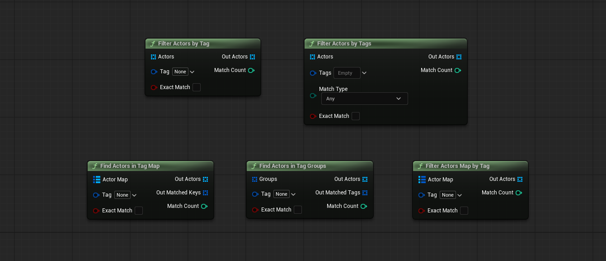

Blueprint-ноды / Blueprint nodes · UE 5.2 & 5.8 · Win64

Пять Blueprint-нод, которые достают акторы с нужным Gameplay Tag из массива или мапы одной нодой — вместо связки ForEach → Actor Has Tag → Branch → Add.
MatchCount — это просто число «сколько нашёл», всегда равное длине выходного массива. Он дублирует OutActors.Num(), чтобы не тянуть лишний узел: одно сравнение MatchCount > 0 отвечает на вопрос «нашёлся ли хоть кто-то». А Gameplay Tag Container — это просто список тегов (набор).«У меня есть массив акторов — оставить только тех, у кого есть тег X».
| Пин | Что это |
|---|---|
Actors | Массив акторов, которые проверяем |
Tag | Тег, который ищем |
bExactMatch | false (по умолчанию) — с иерархией: запрос Damage найдёт и Damage, и Damage.Fire. true — только точное имя |
OutActors | Результат: акторы, у которых тег нашёлся (в том же порядке, что на входе) |
MatchCount | Сколько нашли. Равно длине OutActors — для быстрой проверки «нашёлся ли хоть один» |
То же самое, но ищем по нескольким тегам сразу.
| Пин | Что это |
|---|---|
Actors | Массив акторов, которые проверяем |
Tags | Список тегов, которые ищем (Gameplay Tag Container) |
MatchType | Any — актору достаточно хотя бы одного тега из списка. All — нужны все теги из списка |
bExactMatch | Как в первой ноде |
OutActors | Акторы, прошедшие фильтр |
MatchCount | Сколько нашли |
«У меня мапа, где ключ — тег, а значение — актор. Достать записи по тегу».
| Пин | Что это |
|---|---|
ActorMap | Сама мапа Тег → Актoр. У каждой записи: ключ — тег, значение — актор |
Tag | Тег-запрос. Сравнивается с ключами записей |
bExactMatch | false — запрос Damage находит и запись с ключом Damage.Fire; true — только точный ключ |
OutActors | Акторы из всех записей, где ключ совпал |
OutMatchedKeys | Какие именно ключи совпали. Полезно при иерархическом поиске: запросили Status.ChangeFreeze, а совпал ключ Status.ChangeFreeze.Grill — здесь видно, какая ветка сработала |
MatchCount | Сколько записей совпало (равно длине OutActors) |
«Тег → несколько акторов». Мапа с массивом внутри в Blueprint запрещена движком (вложенные контейнеры), поэтому такие данные хранятся как массив структур FTaggedActorArray — у структуры два поля: Tag (тег группы) и Actors (акторы группы). Нода возвращает сразу всех акторов подошедших групп.
| Пин | Что это |
|---|---|
Groups | Массив групп. Каждая группа = один тег + акторы, к нему относящиеся |
Tag | Тег-запрос. Сравнивается с тегом каждой группы |
bExactMatch | false — запрос Damage найдёт и группу с тегом Damage.Fire; true — только точное имя |
OutActors | Все акторы из всех подошедших групп, слитые в один массив |
OutMatchedTags | Теги именно тех групп, что совпали (каждый — один раз) |
MatchCount | Сколько акторов вернули. Может быть больше числа совпавших групп — в группе обычно несколько акторов |
«Мапа, где ключ — актор, а значение — список его тегов. Отобрать акторов по тегу».
| Пин | Что это |
|---|---|
ActorMap | Сама мапа Актoр → Теги |
Tag | Тег-запрос. Проверяется по списку тегов (значению) каждой записи |
bExactMatch | Как обычно: false — с иерархией, true — точно |
OutActors | Акторы-ключи, в списке тегов которых нашёлся запрос |
MatchCount | Сколько нашли |
Массив акторов: Костёр [Damage.Fire] Лук [Damage] Дверь [Door] Filter Actors by Tag (запрос: Damage, bExactMatch = false) → Костёр, Лук (MatchCount = 2) Filter Actors by Tag (запрос: Damage, bExactMatch = true) → Лук (MatchCount = 1)
Скопируйте папку GameplayTagFilter в <Проект>/Plugins/ и перезапустите редактор. Ноды появятся в палитре в категории Tag Filter.
"<Engine>\Engine\Build\BatchFiles\RunUAT.bat" BuildPlugin "-Plugin=<Path>\GameplayTagFilter.uplugin" "-Package=<OutDir>" -TargetPlatforms=Win64 -NoSubmit
Либо как часть проекта: скопировать плагин в <Проект>/Plugins/ и собрать таргет проекта.
IMPLEMENT_MODULE(FDefaultModuleImpl, GameplayTagFilter); — UHT не всегда генерирует обвязку сам (уже учтено в исходниках).Five Blueprint nodes that fetch actors with a given Gameplay Tag from an array or a map in a single node — instead of wiring ForEach → Actor Has Tag → Branch → Add.
MatchCount is simply "how many were found" — it always equals the length of the output array. It duplicates OutActors.Num() so you don't have to: one MatchCount > 0 comparison answers "did we find anything". And a Gameplay Tag Container is just a list of tags (a set)."I have an array of actors — keep only those that have tag X."
| Pin | Meaning |
|---|---|
Actors | The actors to check |
Tag | The tag to search for |
bExactMatch | false (default) — hierarchical: query Damage finds both Damage and Damage.Fire. true — exact name only |
OutActors | The result: actors whose tags matched (input order preserved) |
MatchCount | How many were found. Equals the OutActors length — handy for a quick "found anything?" check |
The same, but searching by several tags at once.
| Pin | Meaning |
|---|---|
Actors | The actors to check |
Tags | The list of tags to search for (a Gameplay Tag Container) |
MatchType | Any — one tag from the list is enough. All — every tag from the list is required |
bExactMatch | Same as the first node |
OutActors | Actors that passed the filter |
MatchCount | How many were found |
"I have a map where the key is a tag and the value is an actor. Fetch entries by tag."
| Pin | Meaning |
|---|---|
ActorMap | The Tag → Actor map itself. Each entry: key = tag, value = actor |
Tag | The query tag. Compared against the entry keys |
bExactMatch | false — query Damage also finds the entry keyed Damage.Fire; true — exact key only |
OutActors | Actors from all entries whose key matched |
OutMatchedKeys | Which keys matched. Useful with hierarchical search: you queried Status.ChangeFreeze and the key Status.ChangeFreeze.Grill matched — here you see which branch responded |
MatchCount | How many entries matched (equals the OutActors length) |
"A tag → several actors". A map with an array inside is forbidden in Blueprint (no nested containers), so such data is stored as an array of structs FTaggedActorArray — the struct has two fields: Tag (the group's tag) and Actors (the group's actors). The node returns all actors from all matching groups at once.
| Pin | Meaning |
|---|---|
Groups | The array of groups. Each group = one tag + the actors belonging to it |
Tag | The query tag. Compared against each group's tag |
bExactMatch | false — query Damage also finds a group tagged Damage.Fire; true — exact name only |
OutActors | All actors from all matching groups, merged into one array |
OutMatchedTags | The tags of the groups that matched (each listed once) |
MatchCount | How many actors were returned. May exceed the number of matched groups — a group usually holds several actors |
"A map where the key is an actor and the value is its list of tags. Filter actors by tag."
| Pin | Meaning |
|---|---|
ActorMap | The Actor → Tags map itself |
Tag | The query tag. Checked against each entry's tag list (the value) |
bExactMatch | As usual: false — hierarchical, true — exact |
OutActors | Key actors whose tag list contains the query |
MatchCount | How many were found |
Actor array: Campfire [Damage.Fire] Bow [Damage] Door [Door] Filter Actors by Tag (query: Damage, bExactMatch = false) → Campfire, Bow (MatchCount = 2) Filter Actors by Tag (query: Damage, bExactMatch = true) → Bow (MatchCount = 1)
Copy the GameplayTagFilter folder into <Project>/Plugins/ and restart the editor. The nodes appear in the palette under the Tag Filter category.
"<Engine>\Engine\Build\BatchFiles\RunUAT.bat" BuildPlugin "-Plugin=<Path>\GameplayTagFilter.uplugin" "-Package=<OutDir>" -TargetPlatforms=Win64 -NoSubmit
Or as part of a project: copy the plugin into <Project>/Plugins/ and build the project target.
IMPLEMENT_MODULE(FDefaultModuleImpl, GameplayTagFilter); — UHT does not always generate the boilerplate (already handled in this source).